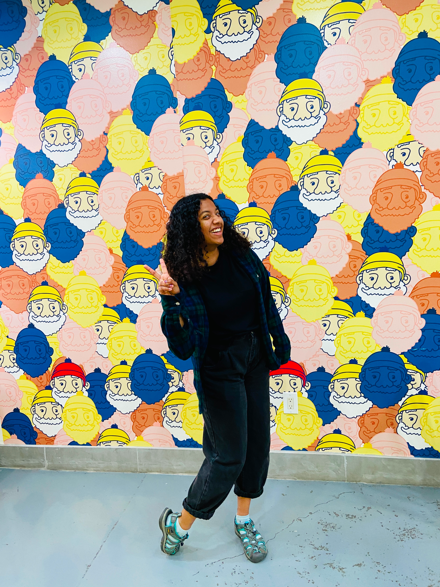

A grad student at UC Davis with a passion for human-centered design and all things creative.
I completed my undergraduate during the Spring of 2024 at the University of California Berkeley where I studied Human Centered Design, an interdisciplinary degree that combines coursework in design, sociology, psychology, and technology. I completed the Berkeley Certificate in Design Innovation where I learned about the life cycle of innovations, from idea to execution.
I was also a part of UC Berkeley’s Human Centered Design Club, Berkeley Innovation. I found it my goal during my time at UC Berkeley to make the Product Design community there as inclusive and accesible as possible. To fulfill my concert-cravings on a student budget, I worked as an usher at Another Planet Entertainment. It was a great way for me to explore new genres and interact with music lovers from all walks of life. When I’m taking a break from studying, campus clubs, and working, I like to sketch, bake, take photographs, skateboard, and explore the Bay Area.